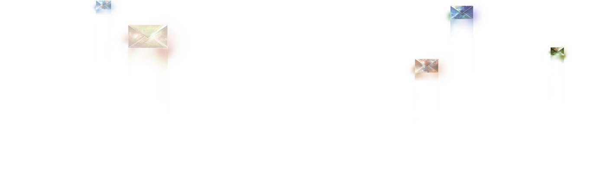
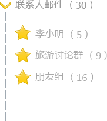
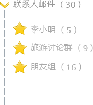

网易邮箱6.0版——2014年最具创意气质的重量级新邮箱，重生光华，为之瞩目。唯美 的视觉设计和视觉化交互，无可替代的独创动态情景皮肤，多项国内创意产品专利技术， 成就无与伦比的出众品味，无可比拟的美妙体验。


[视觉.简]

秉承网易邮箱经典的清新简洁的设计风格，邮箱 6.0 版带来全新一代的设计理念，更追求极致唯美的视觉设计、传承更多人文和艺术底蕴，华丽蜕变，带来更舒服更爽心悦目的视觉享受。


[动态情景皮肤]

国内首创动态情景皮肤，可以随着早晚时光，季节主题的变幻而自动切换，实现了在邮箱里也能感受天气和心情的变化，带来完全不同的页面体验并且呈现最佳视觉感受，还特别针对原有邮箱皮肤的对比度和色彩进行了微调，减少视觉疲劳感。
[功能.创]


新语音视频邮件
写信不再枯燥！在线录制和播放声音和视频邮件，比单纯的文字邮件更感性、更方便，更好玩。
虚拟场景写信模式
网易邮箱6.0版帮你关注邮箱安全，提醒你及时清理邮件，打造轻量级邮箱。
全新多帐号关联
写信不再枯燥！在线录制和播放声音和视频邮件，比单纯的文字邮件更感性、更方便，更好玩。
新语音视频邮件
一键关联和切换多个网易邮箱，同时对于重要的邮箱帐号进行 密码验证保护。
[联系人邮件]


 

邮箱6.0版带来一种极其简便的方式，管理你和联系人的 邮件往来，帮助你精准定位到以联系人为维度的邮件列表。
同时支持以联系组方式来管理邮件，方便以群或相同关系 的群体间的邮件管理，比如：同学组，客户组，公司组等。